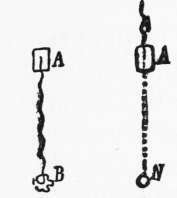
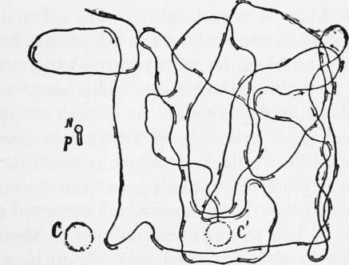

Orientation With The Ants
Description
This section is from the book "The Psychic Life Of Insects", by E. L. Bouvier. Also available from Amazon: The Psychic Life of Insects.
Orientation With The Ants
Not less surprising is this conclusion of Fabre, who admits the faculty of scouting to walking insects whose horizon is necessarily restricted, while he refuses it to Chalicoderma and to Cerceris,-that is to say, to flying insects which embrace a vast space with their eyes. The entomologist of Serignan has observed correctly with the pompilids, but an insufficient analysis of his experiments has made him err with Cerceris and Chalicoderma. Both orient themselves in the same way,-by their eyes, which are large and fortified with numerous facets.
Is it the same with the worker ants? In contrast to the pompilids, they are obliged to walk exclusively, and though we know them to be endowed with sense of touch and smell, we also know that their sight is very imperfect. However, Fabre attributes to them, as to the pompilids, the faculty of scouting and a memory of places. Having seen the Amazon ant (Polyergus rufescens) leave in a compact troop to destroy a colony of another species and make slaves of them, he observes that the road of return is exactly that of going, that its route is the same after an interval of several days, that nothing stops the colony on this march, neither sweepings nor a thread of water nor very odorous leaves ; in fact, that an individual isolated from the column rejoins it very quickly if it departs a little into the explored territory, while it wanders by chance when one places it on the other side of the nest. From all these facts Fabre concludes that the Amazons do not possess the "directive faculty" and that they are guided by "sight helped by a memory of places," not by odor as many biologists think.
May we be kept from believing the truth of the solution proposed by Fabre ! Of all the problems which the behavior of insects presents, this appears to us one of the most subtile and the most controverted. Following the example of Cornetz, who has tried to resolve it by many experiments, we will study first the mechanism of the orientation of exploring ants which start singly on a search for provender; and it is only after that that we shall observe the workers in collective expeditions on the ant roads. According to the very just remark of Cornetz1, we shall see, in fact, "that the collective traject is only a consecutive and complex phenomenon having for its beginning the first path of an ant departing to a distance on a journey of discovery and having succeeded in finding either a place of provender or a propitious spot for the establishment of a new colony."
Exploring ants, (i) Rules of their march. Let us offer an appetizing bit to a worker looking for provender; she takes it and, often without turning, she marches, says Cornetz, in a certain direction which she holds, with or without angles, quite to the place where she will find her nest or a colony.
1 V. Cornetz, Les explorations et voyages des Fourmis. 1914.
Is this return road familiar to her, or is the insect guided to her home by her senses, or by a special instinct, a homing instinct ? Piéron (1904) has shown us by experiment that Cornetz has given a good name to this phenomenon. A worker of Messor is returning to her nest (Figure 10, N) and, meeting a movable support ( A), prepares to proceed : ' ' displaced with the support, without which her journey would be confused, and placed in a similar situation at (A') /known or unknown," she, "directs herself toward a point (B) corresponding to the position of her nest, so that, if it had not been moved," she would have gone exactly to it.
1 other words, she follows a path irallel to her first direction and to a distance equal to that which would have led her to the nest; but, on account of her removal, she does not reach the nest.
Fig. 10.-Route followed by an exploring ant which comes back to its nest N when this has been moved upon a support from A to A'. This route is parallel to that of AN vhicl. it would have followed, but, arriving at B at the distance of the nest, she turns around to search. (After Piéron.).
Before Piéron, Lubbock had tried, in ignorance, a similar experiment. Some yellow ants (Lasius flavus) in an artificial nest (Figure 11, N) went by a narrow bridge, p, to larvae placed in a beaker (C) on a table, and proceeded back and forth between the beaker and the nest. The beaker was moved three inches (to C) while the ant was bnsy with the larvae. Its work finished, the insect took the return road, but, instead of directing itself toward its nest, it followed a direction nearly parallel to this road, continued still, and always in a nearly parallel direction which did not lead it to its nest. The ant retained the orientation of its early journeys. This important result did not strike Lubbock at all, and it is to Cornetz that the honor is due of having shown that it confirmed in advance Piéron 's rule.
Fig. 11.-Route taken by a Lasius flaviis which wandered between its nest N and the larvœ in a cup & when the last were removed to C. (After Lubbock).
Cornetz repeated the experiment of Piéron, not only when the ant followed the direction of its nest but when it was hunting. He offered it a bit of food on a support, and, while it was busy in choosing a particle, he gently turned the support without disturbing the insect. This ant was not at all disoriented. As soon as it took its morsel it directed itself in a certain way, always parallel to that which it would have taken to reach its nest. And this happened whatever rotations were made or in spite of the disturbance which occurred on its journey. When the ant was carried to the other side of the nest it marched away from it, a phenomenon which Fabre has noticed with the Amazon ants, but 'which he attributed to their faulty knowledge of places.
Quite different is the behavior of the exploring worker when one takes it on its issuance from the nest to place it at a considerable distance. Once in possession of its food, it is completely disoriented ; turns on the support, leaves it, makes circles more and more extended through the neighborhood, and often abandons its morsel of food. At two meters it was necessary for Cataglyphis (Myrmecocysts) to make a long march to find its nest ; at two-hundred meters, it searched for a day without success. However, ants are among the best travelers and, rapid on the march, extend their hunts well beyond two-hundred meters. So the return is the function of going, which it follows in an inverse sense. An exploring ant, moved on leaving the nest, is incapable of returning to it; but a single journey out is enough to enable it to orient its return.
Continue to:
- prev: Chapter XII. The Faculty Of Orientation With Terrestrial Articulates. Different Articulates
- Table of Contents
- next: (2) Interpretation Of These Rules